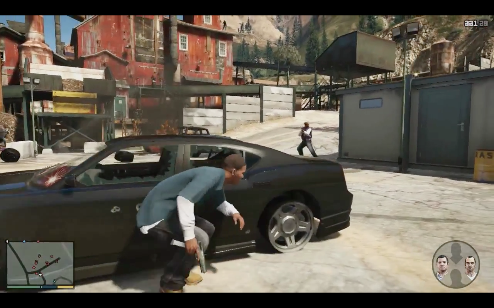
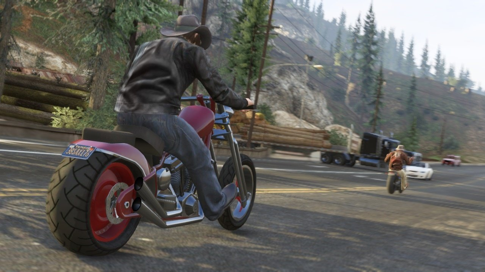

Grand Theft Auto V
Grand Theft Auto V (also known as Grand Theft Auto Five, GTA 5 or GTA V) is a video game developed by Rockstar North. It is the fifteenth installment in the Grand Theft Auto series and the successor of Grand Theft Auto IV. The original edition was released on September 17th, 2013 for the Xbox 360 and PlayStation 3. An enhanced edition was released for both Xbox One and PlayStation 4 on November 18th 2014,. It is due to be released on PC on January 27th 2015.
The original edition was announced on October 25th, 2011, the game's first trailer[2] was released on November 2nd, 2011, at 4:00 PM GMT. The game was initially slated for a Spring 2013 release, but was pushed to September 17th the same year. Then, on July 15th, 2013, Rockstar announced the Japanese release date for the game: October 10th, 2013, almost a month after it was released in the West.[3]The enhanced edition was announced on June 9th, 2014, with pre-orders made available on June 10.
Grand Theft Auto V is set circa 2013 in the city of Los Santos and the surrounding areas and tells the stories of three protagonists: Michael De Santa, Franklin Clinton, and Trevor Philips. It takes place about five years after the events of Grand Theft Auto IV, and four years after the events of Grand Theft Auto: Chinatown Wars.
There are many unique features in the game, one of those features is that when the players are playing as one of three protagonists in the game, the other two are living out their daily lives, and you will be surprised by what you find the characters doing when you switch back into them. Another unique feature is that the character swapping feature is executed in a Google Earth-styled manner and was displayed during a Game Informer demo, which was showed to have ran smoothly and without lag. The PC, PS4 and Xbox One versions will present an exclusive feature which is a first person mode. The whole game can be played through the eyes of the protaganist. This gameplay mode will present a whole new way to play the game. Cars will have detailed interiors different from one another, shooting will be like that of a FPS game.
